• Experiência e Competências
Análise, tecnologia e qualidade em projetos profissionais e acadêmicos
Desenvolvimento web e mobile
Criação e modernização de sites e interfaces responsivas, com atenção à usabilidade, organização visual, desempenho e experiência do usuário.
Banco de dados e integração de sistemas
Experiência acadêmica e prática com bancos relacionais e NoSQL, consultas, estruturação de dados e integração com aplicações.
Controle de versão
Utilização de sistemas de controle de versão como Git e plataformas como GitHub para colaboração e gerenciamento de código.
Organização de projetos e metodologias ágeis
Organização de demandas, priorização de atividades e acompanhamento de entregas. Vivência com Scrum e Kanban em equipes e projetos.
Levantamento de requisitos
Condução de reuniões, levantamento e documentação de requisitos, mapeamento de processos e organização de backlogs alinhados às necessidades dos clientes e aos objetivos do negócio.
Inteligência Artificial e PLN
Desenvolvimento de aplicações com recursos de inteligência artificial, modelos de linguagem e processamento de linguagem natural (PLN), incluindo fluxos conversacionais para chatbots e assistentes.
Conteinerização
Uso de Docker e contêineres para padronizar ambientes de execução, organizar dependências e facilitar a configuração e execução de aplicações.
CI/CD e automação
Conceitos de integração e entrega contínuas, automação de etapas do fluxo de desenvolvimento e organização de pipelines para apoiar testes e entregas.
APIs e integração de sistemas
Integração de sistemas com APIs e serviços externos para ampliar funcionalidades e conectar aplicações a dados e serviços.
• Projetos profissionais
Soluções desenvolvidas para clientes, com foco em resultado, qualidade e boas práticas.
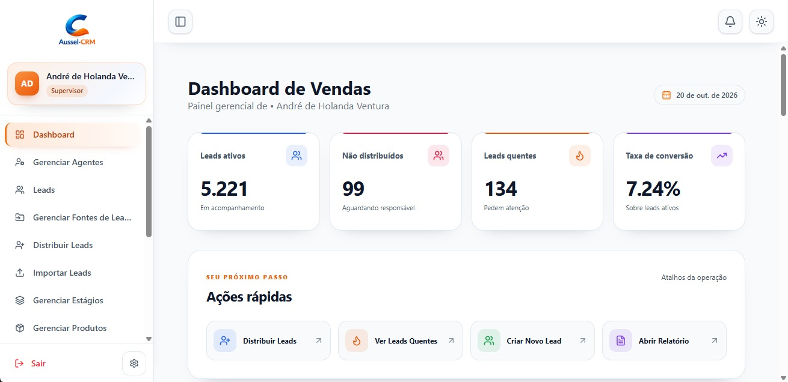
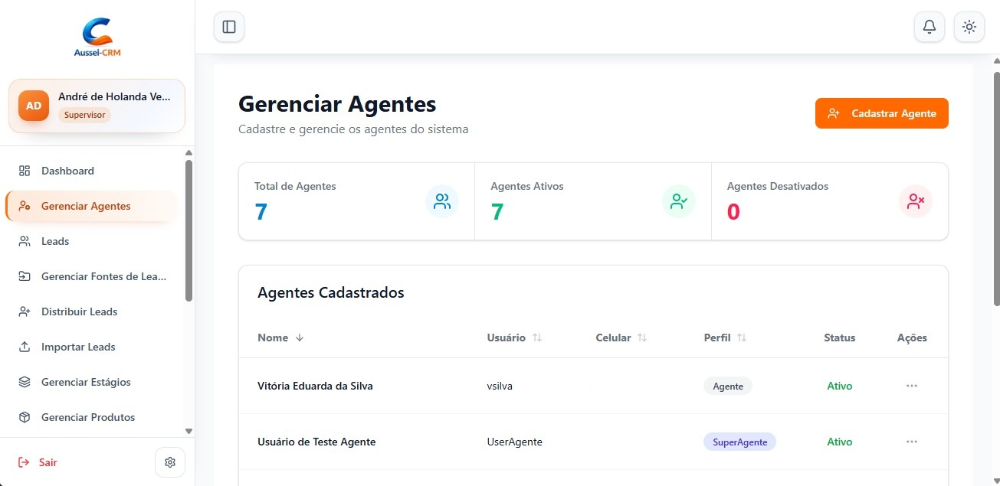
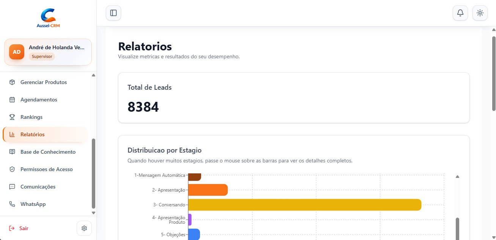
Aussel CRM
Aplicação Web
Descrição do projeto
Plataforma de CRM (Customer Relationship Management) voltada à centralização e gestão de leads provenientes de diferentes canais de captação da empresa. O sistema permite organizar, distribuir e acompanhar oportunidades comerciais ao longo do funil de vendas, desde o primeiro contato até a conversão em cliente e contratação de planos. A solução também disponibiliza dashboards e indicadores de desempenho (KPIs), proporcionando maior visibilidade sobre a operação comercial e apoiando a tomada de decisões baseada em dados.
Infraestrutura
Atividades e responsabilidades
- Levantamento e análise de requisitos junto aos stakeholders, identificando necessidades e oportunidades de melhoria nos processos comerciais.
- Mapeamento do fluxo de captação, distribuição e acompanhamento de leads, desde a entrada no CRM até a conversão em cliente.
- Definição e documentação de requisitos funcionais, regras de negócio e critérios de aceite das funcionalidades.
- Estruturação e priorização do backlog, apoiando o planejamento das entregas e a evolução do MVP.
- Especificação das necessidades de dashboards, relatórios e KPIs para acompanhamento do desempenho comercial.
- Realização de testes funcionais e acompanhamento da homologação para verificar a aderência da solução aos requisitos definidos.
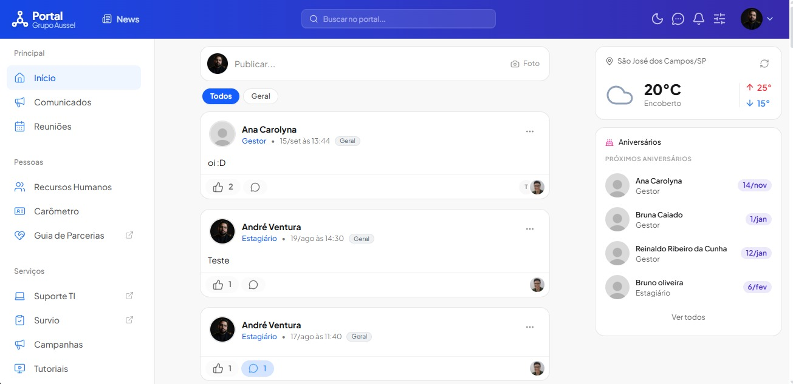
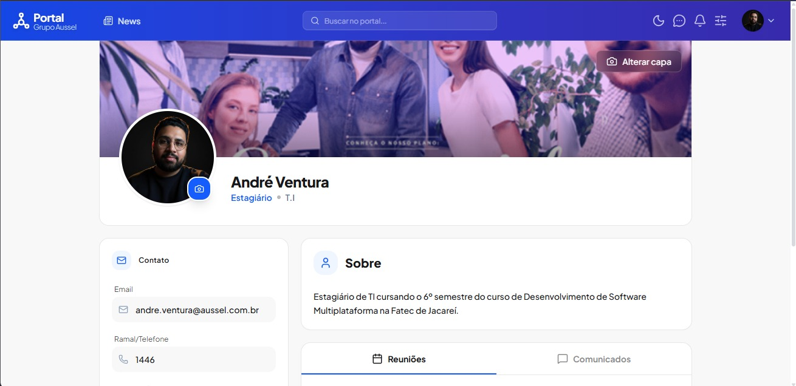
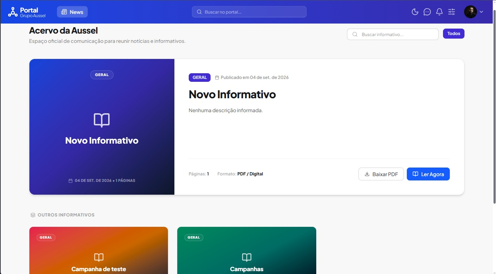
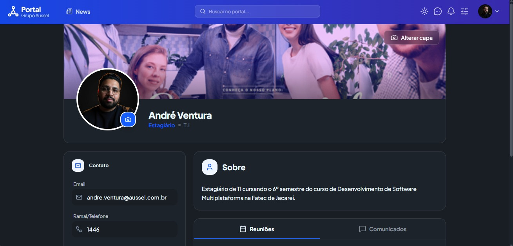
Portal Aussel versão 2.0
Aplicação Web
Descrição do projeto
Portal corporativo voltado à centralização da comunicação interna e à integração de serviços empresariais. A plataforma permite publicar e consultar comunicados, agendar reuniões, acessar informativos e reunir, em um único ambiente, os sistemas e ferramentas utilizados nas atividades da empresa, proporcionando maior organização, acessibilidade e eficiência aos processos internos.
Análise de requisitos e qualidade
Atividades e responsabilidades
- Participação em reuniões com stakeholders para levantamento de necessidades e definição dos requisitos do portal corporativo.
- Mapeamento dos processos de comunicação interna e identificação de oportunidades de centralização dos serviços empresariais.
- Elaboração e documentação de requisitos funcionais, regras de negócio e fluxos das funcionalidades.
- Organização e priorização do backlog, apoiando o planejamento e acompanhamento das entregas do MVP.
- Execução de testes funcionais e validação das funcionalidades desenvolvidas, identificando inconsistências e oportunidades de melhoria.
- Acompanhamento das homologações e alinhamento entre as necessidades dos usuários e as soluções implementadas.
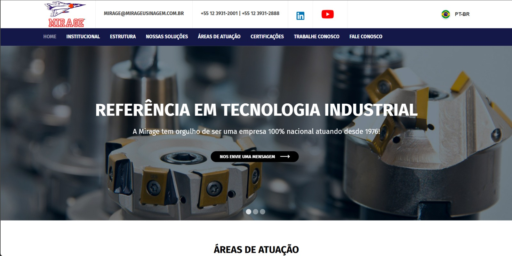
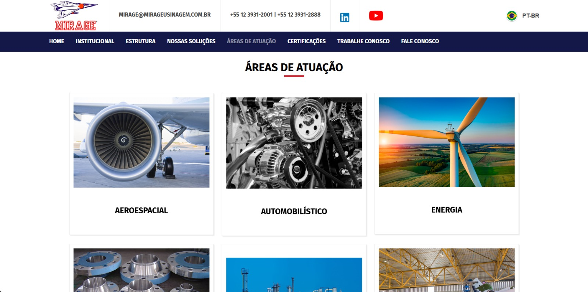
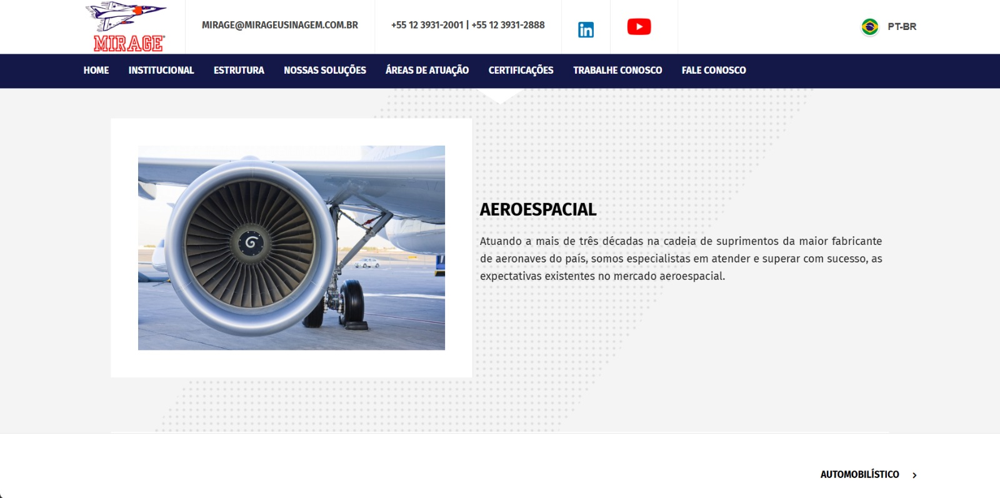
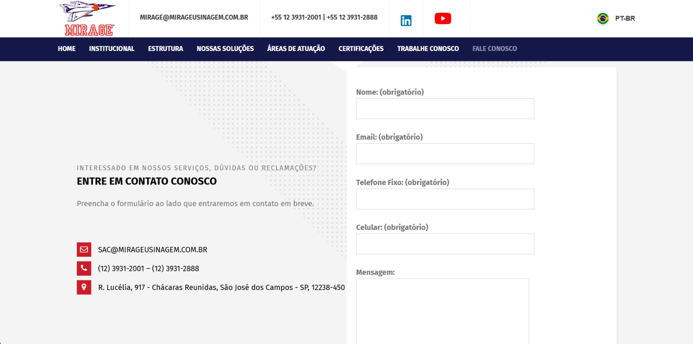
Site Institucional Mirage
Aplicação Web
Descrição do projeto
Modernização do site institucional da Mirage por meio da migração de uma plataforma WordPress para uma arquitetura estática utilizando HTML, CSS e JavaScript. O projeto teve como objetivo reduzir a dependência de plugins e componentes de terceiros, diminuir a superfície de ataque e simplificar a manutenção. Foram realizadas análises das funcionalidades existentes, revisão de código e substituição de extensões do WordPress por implementações em JavaScript, preservando os recursos essenciais e a experiência de navegação. A solução também conta com um fluxo automatizado de publicação utilizando GitHub Actions.
Front-end
Infraestrutura e DevOps
Atividades e responsabilidades
- Análise da estrutura e das funcionalidades existentes no site WordPress para planejamento da migração.
- Migração do site institucional para uma arquitetura estática utilizando HTML, CSS e JavaScript.
- Revisão de código e avaliação dos plugins e extensões utilizados na plataforma anterior.
- Substituição de funcionalidades dependentes de plugins por soluções desenvolvidas em JavaScript puro.
- Preservação das funcionalidades essenciais e adaptação das interfaces durante a modernização.
- Utilização de GitHub Actions para automatizar a publicação das atualizações a partir de commits no repositório.
• Projetos acadêmicos
Projetos de aprendizagem que unem tecnologia, pesquisa e experiências práticas.
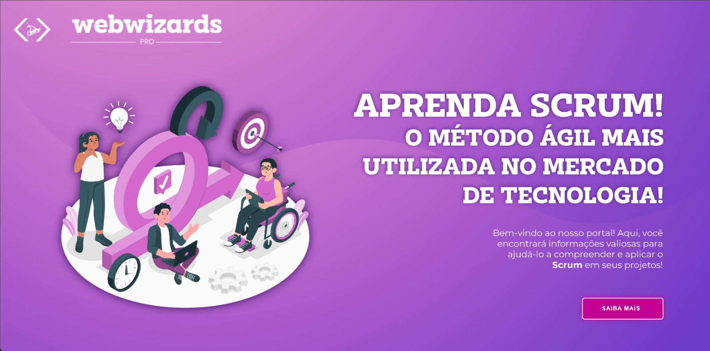
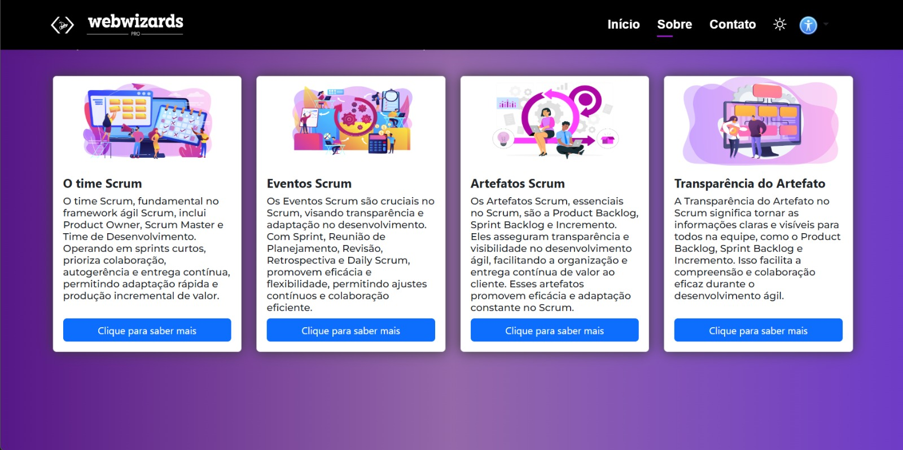
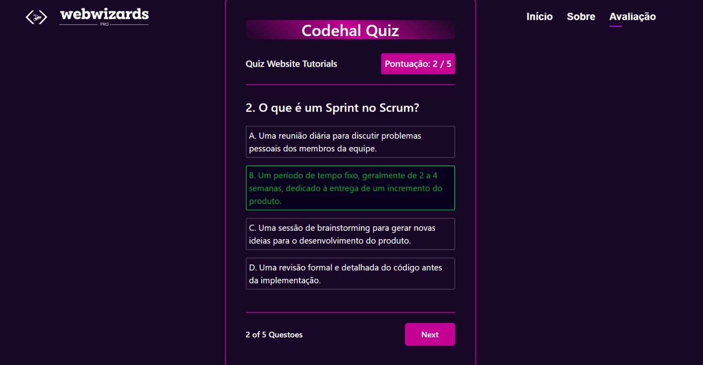
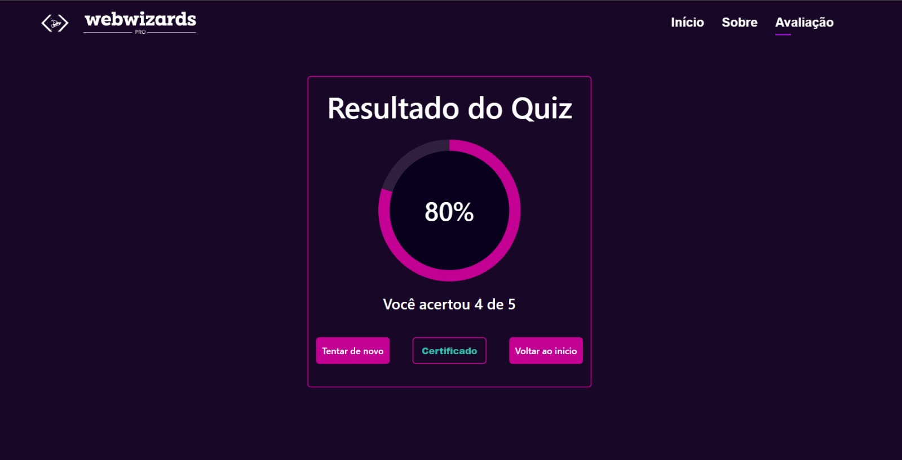
Web Wizards pro
Aplicação Web
Descrição do projeto
Plataforma web educacional desenvolvida para apresentar os fundamentos do Scrum de forma didática e interativa. O conteúdo aborda conceitos de metodologias ágeis, responsabilidades dos integrantes do Scrum Team, eventos, artefatos e seus compromissos de transparência. Ao final da jornada de aprendizagem, o usuário participa de um quiz gamificado para avaliar os conhecimentos adquiridos.
Front-end
Back-end
Infraestrutura
Atividades e responsabilidades
- Desenvolvimento de páginas e componentes utilizando HTML, CSS e JavaScript.
- Estruturação e apresentação de conteúdos educacionais sobre Scrum e metodologias ágeis.
- Implementação de um quiz gamificado para avaliação dos conhecimentos adquiridos.
- Organização da navegação e da jornada de aprendizagem do usuário.
- Versionamento do código no GitHub e publicação da aplicação no GitHub Pages.


NutriTech
Aplicação Web
Descrição do projeto
Plataforma de controle nutricional e acompanhamento de dieta, e visualização de progresso físico.
Front-end
Back-end
Infraestrutura
Atividades e responsabilidades
Descreva aqui suas atividades e responsabilidades neste projeto.


Cloud.Io
Aplicação Web
Descrição do projeto
Plataforma de levantamento e monitoramento climático, dos ventos e altura das ondas na região do lado de Furnas.
Front-end
Back-end
Infraestrutura
Atividades e responsabilidades
Descreva aqui suas atividades e responsabilidades neste projeto.